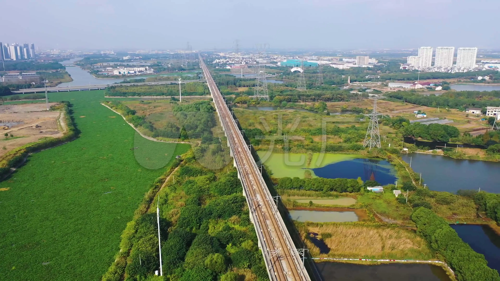
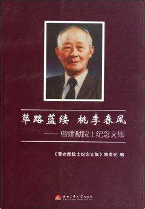

曹建猷先生 (1917 - 1997)
“电力牵引是铁路发展的重要方向，我愿为之奉献一生。”
相关图片展示

京沪高铁桥梁

曹建猷院士纪念文集
曹建猷 - 中国铁道电气化与自动化的奠基人和开拓者
曹建猷（1917 年 12 月 6 日 - 1997 年 9 月 19 日），湖南长沙人，是中国铁道电气化与自动化的奠基人和开拓者，在铁道电气化和自动化领域做出了卓越贡献。
教育背景
曹建猷 1939 年毕业于交通大学唐山工学院（现西南交通大学），随后在 1947 年获得美国麻省理工学院电机系硕士学位。
职业经历
曹建猷学成回国后，先后在交通大学唐山工学院、北方交通大学等院校任教。他长期致力于铁道电气化与自动化的教学和科研工作，培养了大批相关领域的专业人才。同时，他还参与了中国多条电气化铁路的规划和建设工作，为中国铁道电气化事业的发展提供了重要的理论支持和技术指导。
主要成就
铁道电气化理论研究
曹建猷在铁道电气化理论方面进行了深入的研究，提出了一系列具有重要影响的理论和方法。他的研究成果为中国铁道电气化的发展奠定了坚实的理论基础，推动了中国铁道电气化技术的进步。
培养专业人才
作为一名优秀的教育家，曹建猷培养了众多铁道电气化与自动化领域的专业人才。这些人才在中国铁道事业的发展中发挥了重要作用，为中国铁道电气化与自动化事业的发展提供了有力的人才支持。
历史影响与贡献
推动铁道电气化发展
曹建猷的研究和实践为中国铁道电气化的发展做出了重要贡献。他的工作推动了中国铁道电气化技术的进步，提高了中国铁路的运输效率和安全性，为中国铁路的现代化建设奠定了基础。
学术引领与传承
曹建猷在铁道电气化与自动化领域的学术成就和影响力，为中国相关领域的学术研究和技术发展提供了重要的引领和示范。他的学术思想和研究方法对后来的学者和工程师产生了深远的影响，推动了中国铁道电气化与自动化事业的持续发展。
纪念与传承
- 学术著作传承：曹建猷的众多学术著作和研究成果成为了铁道电气化与自动化领域的重要参考文献，为后人的学习和研究提供了宝贵的资料。
- 人才传承：他培养的大批专业人才在各自的岗位上继续为中国铁道事业的发展贡献力量，传承和发扬了他的学术精神和专业理念。